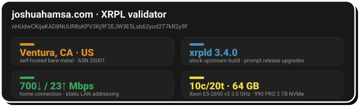
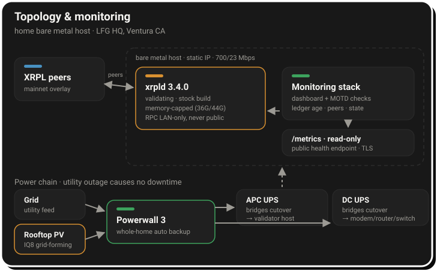
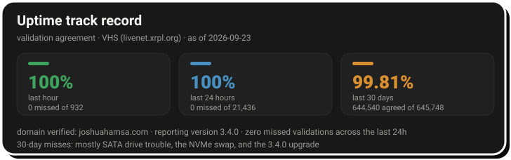

For about three years I've been running XRP Ledger infrastructure, and today that means one validator on mainnet. It runs on refurbished hardware at my house, powered by the sun during the day and a battery at night. It isn't on the default UNL, and the only person who depends on it is me. It's still been one of the best learning experiences I've had in tech.
This is a write-up of how it's built, the outage that taught me the most, and what I'd tell someone starting out. You can watch the node live on the validator dashboard.

The hardware
The whole machine cost less than a thousand dollars, mostly refurbished parts from Newegg and eBay:
- A refurbished Dell Precision T3610 workstation with 64 GB of RAM
- A refurbished Xeon E5-2690, later swapped for an E5-2690 v2 (10 cores, 20 threads, 3.0 GHz)
- A new Samsung 870 SATA SSD, 500 GB, which now only boots the OS
- A Samsung 990 PRO 2 TB NVMe drive, added later, which now holds the OS and the ledger data
- An RTX 2060 I added later and wouldn't buy again
It runs Ubuntu 22.04 LTS with the NuDB backend. A validator doesn't need to serve history, so xrpld deletes old ledgers as it goes. I keep a day or two's worth (online_delete=25000), and the ledger store sits at about 34 GB.
What surprised me is how little of the machine the validator actually uses. CPU load sits around 2.8 on 20 threads and the load factor stays at 1. The two things that have actually hurt it are disk writes and RAM.
The drive I was quietly wearing out
For a long time I kept as little history as I could: online_delete=512, about half an hour of ledgers, and a store of about 12 GB. Less data seemed like less work for the disk. It's the opposite.
Online deletion works in rotations. Every online_delete ledgers, xrpld creates a new, empty NuDB database and copies the entire current ledger state into it, then drops the old one. NuDB is expensive to fill from zero. Every batch write updates its hash index twice (once in a log, once in the key file) with several fsyncs per batch. Because the hash keys are random, each batch touches buckets all over the index, and the index keeps splitting buckets as the new database grows. When I measured it, the data file was growing about 2.5 MB/s while total writes ran about 91 MB/s: roughly 35× overhead.
That cost is paid once per rotation, so total writes scale with how often rotations happen, and at 512 that was 43 times a day. By the end the rotations were running back to back:
online_delete | Rotations/day | Est. writes/day | 2 TB 990 PRO lasts |
|---|---|---|---|
| 512 (what I ran) | 43, nonstop | ~7 TB | ~6 months |
| 2000 (xrpl.org default) | ~11 | ~1.3 TB | ~2.5 years |
| 25000 (what I run now) | ~1 | ~0.2–0.3 TB | 10+ years |
That's what was grinding down the original SATA SSD. The ledger data and the OS now live on the NVMe drive, the SATA drive only boots the machine, and with online_delete at 25000 the node rotates about once a day. The store is bigger, but the disk does a small fraction of the work.
The power
I'm a solar engineer, so of course the validator runs on sunshine. Rooftop PV charges a whole-home Powerwall 3. An APC UPS bridges the server through the grid-to-battery cutover, and a separate DC UPS does the same for the modem, router, and switch. The microinverters are grid-forming, so if the utility goes down for days, the panels can still recharge the battery. A utility outage causes no downtime, and the node costs me nothing per month to power.

How it's set up
Most of what I've gotten right here I owe to an experienced operator who was generous with security advice in my DMs. The rest I learned by getting it wrong. In broad strokes:
- Private, behind peers I chose. The validator never advertises itself, accepts no inbound connections, and only dials out to eight fixed peers. One is a Ripple hub. The rest are hubs colocated with other validators, picked for low latency to the rest of consensus.
- Admin interfaces on loopback only. Anything with admin rights stays on the machine. Monitoring gets its own read-only interface, and the public dashboard only ever sees a read-only metrics endpoint.
- Least privilege. xrpld runs as its own unprivileged user under a hardened systemd unit.
- Memory limits at the systemd layer. A 36 GB soft cap and a 44 GB hard cap, added after the outage below.
- Stock binaries, upgraded by hand. OS security patches install automatically, but the xrpld package is deliberately excluded, so it never moves without me. Before each upgrade I save a dated copy of the config, then upgrade, restart, and watch until the node is back to proposing. The 3.3.0 upgrade in August was back in consensus in under a minute.
- Domain verification. The validator is tied to joshuahamsa.com through xrp-ledger.toml, so anyone can confirm who runs it.
One opinionated choice: I vote for a 1-drop reference fee and zero account and owner reserves. My view is that reserves are a bigger barrier to adoption than spam is a threat.
For release timing, my feed has historically been Vet's timeline. When he starts posting about a new xrpld version, I start reading release notes. If I still haven't made time by the point he's warning people about getting amendment-blocked, that's my hard deadline.
The worst night: 20 July 2026
In mid-July the network was hit with a flood of junk validator manifests, which made xrpld's cache of untrusted manifests grow without bound. No fix had shipped yet, so I wrote a patch to filter them out. To test it, I ran the patched build in a Docker container, stopped my production validator so the two wouldn't fight over ports, and let the test build validate for what was meant to be a few days.
The container had no memory limit.
It leaked quietly for eight days: about 1.8 million log lines a day and no stall warnings. Then, in the final hours, swap ran out and ledger fetches went from milliseconds to 30 seconds. At 02:09 UTC the kernel's OOM killer fired and killed the biggest process, which was the container. But the memory thrashing had already stalled the network service in the middle of a DHCP renewal. The network card lost its lease and never got it back. The validator was dead, and so was everything else on the box.
I found out badly. Nothing paged me, because my monitoring lived on the same host. Hours later I noticed the dashboard and the validator history sites showing my key as missing, and the box wouldn't answer SSH. The fix for the network was walking up to the physical console the next morning. Total downtime was about 11.5 hours.
I rebooted, then spent four days on root cause. I initially blamed the production service and only found the real culprit by reading the container's exit code (137, OOM-killed) and the trajectory of its logs. The fixes:
- A static IP, so a DHCP renewal can never be a single point of failure again
- Memory caps on the validator's systemd unit
- An unrelated crash-looping service disabled
- The patched build promoted to a proper systemd unit with the same protections
When xrpld 3.2.1 shipped upstream with a stricter version of the same filter, I went straight back to the stock binary and kept my build only as a rollback.
The quieter failures
The July outage was loud. What came after was quiet, which is worse.
First, the rippled → xrpld package rename moved the systemd unit. For several days my shiny new memory cap was protecting a dead unit while the live validator ran uncapped. Nothing broke, so nothing told me.
Second, the validator still shares its host with a dozen Docker services from my other projects. While answering the XRPL Foundation's node operator survey this month, I found that the kernel had OOM-killed xrpld three times in three weeks. xrpld was well under its own cap each time, but a neighboring workload spiked and the kernel picked the validator. Every kill was invisible: systemd restarted xrpld within seconds, the node was back to full in under two minutes, and by the time I looked, everything was green again.
Since then I've told the kernel to kill the containers before the validator, and removed an unused stack that was eating about 5 GB of RAM. The real fix is moving the remaining app stacks to their own box, and better alerting, and both are in progress.
What I learned
- Never run an experiment without a resource cap. A self-built binary is an update too, and it needs the same limits and monitoring as the real thing.
- Resource isolation is a security control, not just an ops one. Every extra service on the validator's host is attack surface, memory pressure, and one more thing that can wedge the machine.
- Verify enforcement; don't trust config. A cap on the wrong unit, a monitoring job pointed at a deleted path, a forgotten service listening on ports: all three happened to me. Config that exists but doesn't apply is worse than none, because you stop looking.
- Keeping less history isn't free. A tiny
online_deletesaves disk space and costs you the disk. Size it so rotations are rare. - Security decays quietly. Things get set up right once, then a rename, a migration, or an experiment moves them out from under their protections. Answering a detailed survey turned out to be a surprisingly effective audit.
- The only irreplaceable file is the master validator key. It's what domain verification and any UNL listing are bound to. Everything else, including the config and the ledger data, can be regenerated. Plan where the second copy of that key lives before you need it.
How I know it's healthy
Three things, day to day:
- The login banner. A cron job renders a validator summary into the SSH message of the day every 30 seconds: state, ledger, peers, amendment votes, uptime, disk, and memory. I'm on the box daily for other work, so I see the validator's health before I type a command.
- The web dashboard. The live dashboard reads from a Prometheus exporter I wrote. It's open source: LFG-XRPL-Validator-Dashboard.
- External sources of truth. XRPScan and the validator history service, to confirm my key agrees with the network rather than trusting my own node's view of itself.
Healthy means server_state is proposing, the validated ledger is less than about 5 seconds old, all 8 fixed peers are connected, the node isn't amendment-blocked, and my key shows up in the external agreement stats.

What I wish existed
A first-run setup command. The hardest part of starting out was the config file. Mine is about 1,500 lines, and roughly 60 of them are live settings. It isn't obvious which options matter for a validator, which are safe to leave alone, or even that some sections are commented out and inert. Something like xrpld init --validator that asks a few questions and writes a short working config would have saved me the most time. A companion xrpld config check, one that prints the effective values and flags defaults that don't fit the hardware, would catch half the mistakes I've made. I ran for over a year without knowing what node_size was actually in effect.
Operational docs. The official docs say you can safely enable validation on a server that's also used for other purposes. In my experience that's only true if the other workloads are resource-capped and the validator is protected from them. I'd like to see guidance on memory limits, OOM priority, what to monitor and alert on, and where the validator key should live. The docs also don't warn that a small online_delete multiplies disk writes, which cost me a drive.
Real numbers on hosting diversity. The word on the grapevine is that most validators run on VPS providers, with a large share on a single one. If that's even roughly true, it's a risk for the network rather than for any one node: one provider's outage, policy change, or legal request could take a big slice of validators offline at once. Running on hardware I own brings its own problems, as this whole post shows, but it means my failures are uncorrelated with everyone else's. I'd like to see UNL publishers weight provider and jurisdiction diversity more visibly, and publish the actual numbers.
If you're thinking about running one
Buy refurbished and run it from home. A used single-socket Xeon with 64 GB of RAM and a consumer SSD is plenty, and it's well under a thousand dollars. Besides adding real decentralization to the network, the confidence you get from hosting your own infrastructure and watching it sync with the network is hard to beat. I've learned a huge amount about servers, networking, and the XRPL itself, most of it by getting something wrong and fixing it. The investment is small and the return is more than worth it.